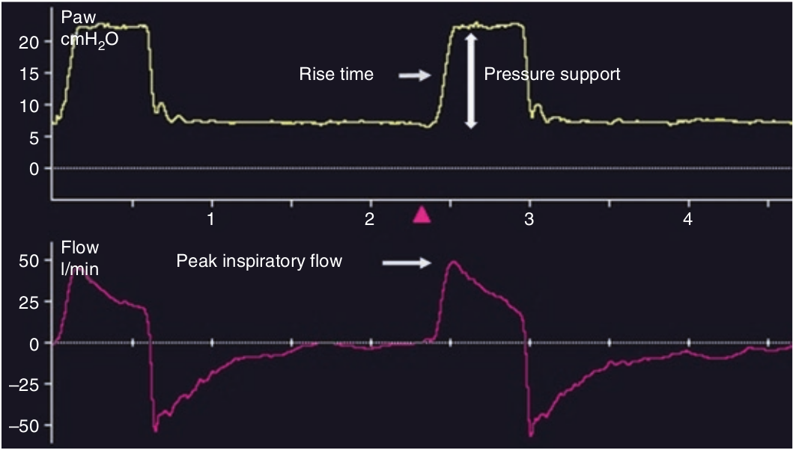

در مد حمایت فشاری، شدت جریان حداکثر دمی از تعامل بین فشار حمایت تنظیم شده، مدت صعود فشار، تلاش بیمار، و کمپلیانس و مقاومت سیستم تنفسی بدست می آید. شدت جریان حداکثر دمی می بایست متناسب با نیاز بیمار باشد تا باعث کم کردن کار تنفس گردد.

شدت جریان حداکثر دمی با کدام عامل زیر متناسب نیست؟
۱ - PEEP
۲ - فشار دمی تنظیم شده
۳ - تلاش دمی بیمار
۴ - مدت زمان صعود فشار
۵ - مکانیک تنفس